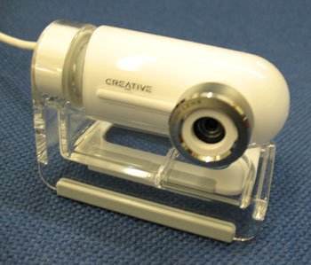
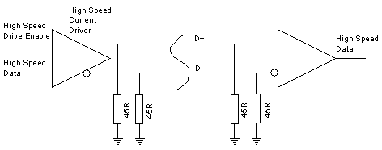
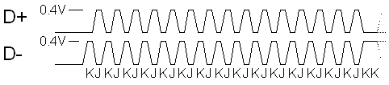
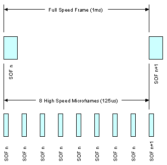
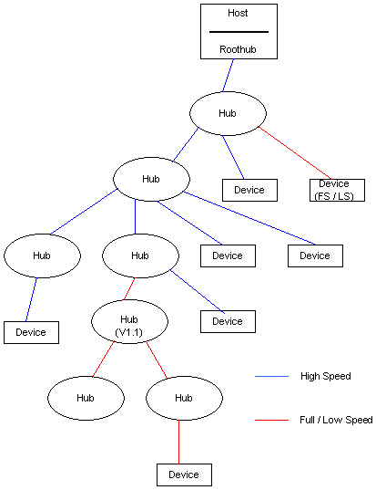
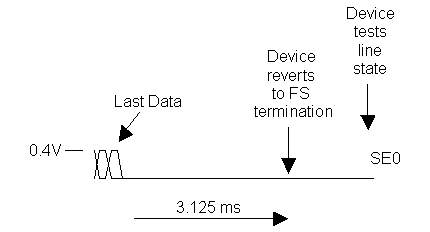
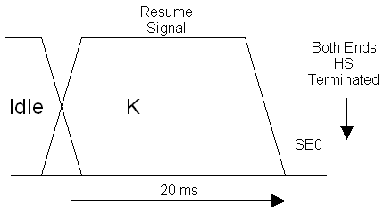

|
|
|
| Back |
Part
6 - High Speed Basics
|
|
|
Introduction to
High Speed USB
As mentioned before,
the high speed additions to the specification were introduced
in USB 2.0 as a response to the higher speed of Firewire.
As High Speed was
added as an afterthought, and had to maintain compatibilty
without compromising performance, we have left the description
of High Speed until we had covered the basics of the original
specification.
|
|
 |
|
|
Subjects covered
in this part...
|
|
|
|
|
Data
Transmission
The data rate achieved
by High Speed is 480 Mb/s. This needs to be transmitted down
cables which were originally specified for a 12 Mb/s transmission
rate,
To achieve this,
when the link is conveying high speed data, each end of D+
and each end of D- is terminated with a 45 Ohm resistance
to ground.
|
|
Data is sent by
steering a current of 17.78 mA (derived from the positive
supply) into either the D+ or the D- line. This results in
a voltage of 400mV on the line being fed with current. The
differential state of the line is detected at the receiving
end by a differential receiver. This arrangement is able to
reliably receive data sent at 480 Mb/s.
In fact the 45
Ohm resistors are provided by the Full Speed / Low Speed driver,
at each end of the link, applying a Single Ended Zero. The
FS/LS driver is designed to provide as accurate a termination
resistance as possible. By switching off the high speed transceiver
current source, the line conditions are as defined for full
speed / low speed.
|
|
Basics of High
Speed Transmission

|
|
|
In addition to
the differential receiver, there is also a 'transmission envelope
detector' and a 'differential envelope detector'.
The transmission
envelope detector produces a 'squelch' signal if there is
less than 100uV between the data lines, which means that there
is no data being received.
The differential
envelope detector detects if the far end has been unplugged,
as the differential voltage will double to about 800 mV if
the far end terminating resistors are not present.
(Further down
the page you will see how this is used by the host to detect
the unplugging of a high speed device.)
|
|
Further
Detail in the Specification
Fig
7-1 in Chapter 7 of the USB Specification V2.0 shows
a complete suggested circuit for a low / full / high
speed transceiver.
|
|
|
|
Packet
Sync
Just prior to the
packet sync, both data lines are low. The sync is sent using
the NRZI sequence KJKJKJKJKJKJKJKJ
KJKJKJKJKJKJKJKK.
A hub may drop
up to 4 bits from the sync pattern. After 5 hubs the sync
field of a packet may be only 12 bits long.
|
|
High Speed Synchronisation
Pattern

|
|
End
of Packet
On a low or full
speed link, a brief Single Ended Zero (SE0) state is used
to indicate End Of Packet (EOP), and idle is indicated by
a J condition.
On a high speed
link, the idle state is effectively a SE0, so that state is
not available to indicate EOP, and a different method for
indicating the end of packet is used. During normal data transmission
there can not be a run of more than 6 1's in a row, because
a 0 is automatically inserted (and will be removed on reception).
This guarantees that there will be sufficient transitions
in the NRZI encoded data stream to allow clock recovery.
|
|
At high speed,
the EOP is indicated, by deliberately sending a byte which
contains a bit-stuffing error; '01111111'. This applies at
the end of all packets except SOF.
Each high speed
SOF packet is terminated with 5 NRZI bytes containing bit-stuffing
errors: 01111111 - 11111111 -11111111 -11111111 -11111111.
This pattern allows the 'disconnection envelope detector'
to detect a rise in data amplitude above 625 mV, in the event
that the device, along with its termination resistors, has
been unplugged.
|
|
|
Compatibility
Care has been taken
to provide as much compatibity between high speed and full
/ low speed host, and high speed and full / low speed devices.
USB is a plug-and-play system and must not confuse the user.
So a low or full
speed device will always work with a high speed capable host.
|
|
A
high speed device will always work with a full / low speed host,
at least to the extent of communicating its identity and capabilities
to the host (which it can do at full speed). The host will then
be in a position to report to the user if they have a device
which relies on high speed bandwidth to provide any functionality. |
|
|
Negotiating
High Speed
To maintain the
required compatibility, a high speed device will always present
itself initially as a Full Speed device (by a 1.5K pullup
resistor on D+).
|
|
The negotiation
for High Speed takes place during the Reset, which is, as
we remember, the first thing a host must do to a device before
attempting data communication.
The high speed
detection handshake is initiated by the device.
The hub will respond
to it, if it is high speed capable.
|
|
|
|
What the device
does
The device leaves
its D+ 1.5K pullup resistor connected, and does not
terminate the lines with 45 Ohm resistors as it would for
high speed. But it drives high speed current (17.78mA) into
the D- line for at least a millisecond. Now, remember that
the hub is applying a reset condition to the lines, so effectively
is already terminated as for high speed data. As only one
end of the link is terminated, the hub will see about 800
mV on D-. This condition is called a K-chirp.
A full / low speed
hub will pay no attention to this condition, but a high speed
hub will detect it using its differential receiver and the
absence of a squelch signal.
If the hub does
not respond, then the rest of the reset, and subsequent data
transmissions will take place as is normal for a full speed
device.
|
|
Hub Response
If the hub is high
speed capable then it will monitor the K-chirp from the device
until it sees it completing. It must, within 100us, send a
series of K-J chirp pairs to the device. This means that it
will inject 17.78 mA alternately into the D- and the D+ lines.
Each of these chirps lasts around 50us, and there are no gaps
between them. The device has to see at least 3 chirp pairs
before assuming that the hub is high speed capable.
Switching to High
Speed
At this point the
device disconnects its 1.5K pullup resistor, applies the 45
Ohm high speed terminations (using its full speed data driver
in SE0 mode), and is thus in a state to perform high speed
data transmission and reception. The hub will continue to
send chirp pairs up until 100 - 500 us before the end of reset,
and the device will monitor these chirps. At the point in
time when the device termination is applied, the amplitude
of the chirp signals, viewed on an oscilloscope would be seen
to halve in amplitude from 800mV to 400mV.
|
|
|
Frames
and Microframes
The 1 ms frame
rate in full speed / low speed USB, is used for a number of
purposes, such as scheduling access to the bus, and as a timing
reference for interrupt and isochronous transfers.
For high speed,
a higher frame rate was deemed appropriate, while still maintaining
a relationship with the existing 1 kHz rate.
To this end, high
speed uses the 'Microframe' which is 125us long (8 Microframes
per millisecond). The correspondence with the 1ms frame numbering
is maintained in the high speed SOF packets by repeating each
frame number in 8 successive Microframes.
Packet Length
The maximum length
of packets was increased for high speed, see table to right.
Packets per (Micro)frame
At high speed it
is possible to specify up to 3 isochronous or interrupt transfers
per microframe, rather than the 1 transfer per frame of full
speed; giving a maximum possible isochronous or interrupt
transfer rate of 192 Mb/s.
|
|

|
Transfer
Type
|
Max
Packet Size
|
|
LS
|
FS
|
HS
|
| Control |
8
|
8,
16, 32, 64
|
64
|
| Bulk |
-
|
8,
16, 32, 64
|
512
|
| Interrupt |
up
to 8
|
up
to 64
|
up
to 1024
|
| Isochronous |
-
|
up
to 1023
|
up
to1024
|
|
|
|
New
Packet Identifiers
Some new PIDs were
added for high speed, partly to overcome some inefficiencies
which were recognised in the full speed protocol, and partly
to support new isochronous transfer features, and the new
requirement for 'split transactions' (more about this below).
The identifiers
which are designed to overcome some inefficiencies and improve
bandwidth usage at high speed are:
Identifiers which
allow for control over multiple isochronous packets per microframe
are:
The identifiers
added to assist with split transfers are:
|
|
| PID
Type |
PID
Name |
PID<3:0>* |
| Token |
OUT |
0001b |
| IN |
1001b |
| SOF |
0101b |
| SETUP |
1101b |
| Data |
DATA0 |
0011b |
| DATA1 |
1011b |
| DATA2 |
0111b |
| MDATA |
1111b |
| Handshake |
ACK |
0010b |
| NAK |
1010b |
| STALL |
1110b |
| NYET |
0110b |
| Special |
PRE |
1100b |
| ERR |
1100b |
| SPLIT |
1000b |
| PING |
0100b |
| Reserved |
0000b |
*
Bits are transmitted lsb first
|
|
|
High
Speed Hubs with Full and Low Speed Devices
In the original
USB, there was a built-in inefficiency, in that the whole
bus was held up, waiting for low speed transactions to take
place.
Having gone to
the trouble of increasing the data rate to 480 Mb/s, it
would have been wasteful if this situation was perpetuated,
so a different approach was taken.
All communication
to a USB V2.00 hub takes place at high speed, even when
it contains traffic for low or full speed devices. In a
tree of high speed hubs the packets are tranferred down
the tree at high speed as far as the hub, to whose port
a low or full speed device is connected.
|
|
The hub in question
assigns special control circuitry within itself, to take
over the role of communicating with the low or full speed
segment of the bus; initiating the transactions, getting
the response back from the device, and finally communicating
the result back to the host at high speed.
The mechanism
needed to deal with this, without holding up the high speed
segments of the bus, involves splitting every low or full
speed transaction into 2 stages; the request from the host,
and the eventual response from the device.
The host communicates
its requirements with the high speed hub using a new packet
with a SPLIT identifier. This packet can define a Start
Split, or a Complete Split transaction.
The actual sequence
of packets in these two types of transaction is very dependent
on the transfer type and direction.
|
|
|
This diagram illustrates how full speed and low speed
traffic is kept separate from high speed traffic. The blue
lines carry only high speed traffic, and the red lines only
full or low speed. Any traffic directed at full or load
speed devices passes through the high speed section, as
high speed split transactions.

|
|
|
Reset
The host will maintain
its SE0, but not send any data, when it wants to Reset the
device. The device will initially see a SE0 (with no data
activity) and will not be able to distinguish this condition
from a Suspend. After, at the latest, 3.125 ms of this condition
the device must revert to full speed termination itself, and
then test whether it sees SE0 or Idle. If it sees SE0 then
it knows it is being reset, and will procede with the chirp
handshake described above.
|
|
 |
|
|
Suspend
A high speed host
suspends a device by reverting to a Full Speed idle state.
Again the device will initially see a SE0 (with no data activity)
and will not be able to distinguish this condition from a
Reset.
After, at the latest,
3.125 ms of this condition the device must revert to Full
Speed termination itself, and then test whether it sees SE0
or Idle. If it detects idle it must assume that it it being
suspended, and must go to its lower power suspended mode.
Note that both
ends of the link must remember that they were in high speed
mode, so that when Resume takes place, no high speed handshake
is required.
|
|
|
|
|
Resume
As for full / low
speed, the Resume is signalled by a K state for 20 ms. When
the link was previously in high speed mode, the resume is
completed by a transition back to SE0 at the end of the resume,
and both host and device must be in high speed terminated
mode within 2 low speed bit times.
|
|
 |
|
|
Detecting
a Device Unplug
See the description
of the EOP signal above.
|
|
|
|
|
Summary
We have looked
at the nuts and bolts of High Speed USB to see how a 480 Mb/s
bit rate can be achieved in the same system designed originally
to support Full Speed and Low Speed USB.
|
|
|
|
Coming up...
Next we will examine
the contents of the new packets and how they are used in the
various data transfer types. We will also see how the bus
can support three such different data rates without compromising
bus performance at High Speed.
|
|
Forward |
|
Copyright
© 2006-2008 MQP Electronics Ltd
|
|
|
|
|